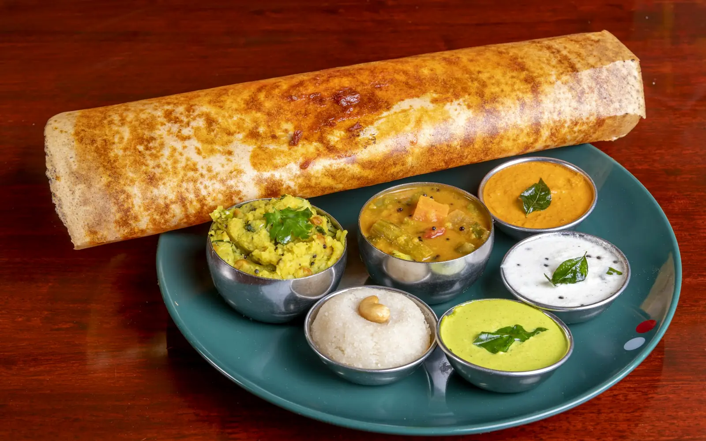

14 dishes
South Indian
Dosa, idli and sambar
Pick a dish and cook it tonight.
01
Dishes
12 recipes IndiaMasala DosaKarara sunehra dosa aur masaledar naram aloo.40 minHard
IndiaMasala DosaKarara sunehra dosa aur masaledar naram aloo.40 minHard IndiaMysore Masala DosaLal chutney lagi, aloo masale bhari karari dosa.50 minHard
IndiaMysore Masala DosaLal chutney lagi, aloo masale bhari karari dosa.50 minHard IndiaIdli SambarBhaap mein pakki naram idli aur khatta-teekha sambar.60 minMedium
IndiaIdli SambarBhaap mein pakki naram idli aur khatta-teekha sambar.60 minMedium IndiaMedu VadaBahar se karare, andar se rooi jaise naram urad ke vade.40 minMedium
IndiaMedu VadaBahar se karare, andar se rooi jaise naram urad ke vade.40 minMedium IndiaUttapamPyaaz-tamatar wali moti, naram dosa jaisi uttapam.40 minMedium
IndiaUttapamPyaaz-tamatar wali moti, naram dosa jaisi uttapam.40 minMedium IndiaVegetable UpmaSooji aur sabziyon ka halka garam naashta.25 minEasy
IndiaVegetable UpmaSooji aur sabziyon ka halka garam naashta.25 minEasy IndiaVeg BiryaniKhushbu daar chawal aur masaledar sabziyon ki parat wali biryani.60 minHard
IndiaVeg BiryaniKhushbu daar chawal aur masaledar sabziyon ki parat wali biryani.60 minHard IndiaLemon RiceHaldi aur nimbu ke tadke wale khatte chawal.25 minEasy
IndiaLemon RiceHaldi aur nimbu ke tadke wale khatte chawal.25 minEasy IndiaBisi Bele BathDal, chawal aur sabziyon ki masaledar garam khichdi.60 minMedium
IndiaBisi Bele BathDal, chawal aur sabziyon ki masaledar garam khichdi.60 minMedium IndiaRasamImli, tamatar aur kali mirch ka khatta-teekha South Indian soup.30 minEasy
IndiaRasamImli, tamatar aur kali mirch ka khatta-teekha South Indian soup.30 minEasy IndiaAvialNariyal aur dahi ki sabziyon ki Kerala wali mishrit sabzi.40 minMedium
IndiaAvialNariyal aur dahi ki sabziyon ki Kerala wali mishrit sabzi.40 minMedium IndiaCurd RiceDahi, chawal aur tadke ki thandi, sukoon wali South Indian khichdi.20 minEasy
IndiaCurd RiceDahi, chawal aur tadke ki thandi, sukoon wali South Indian khichdi.20 minEasy02